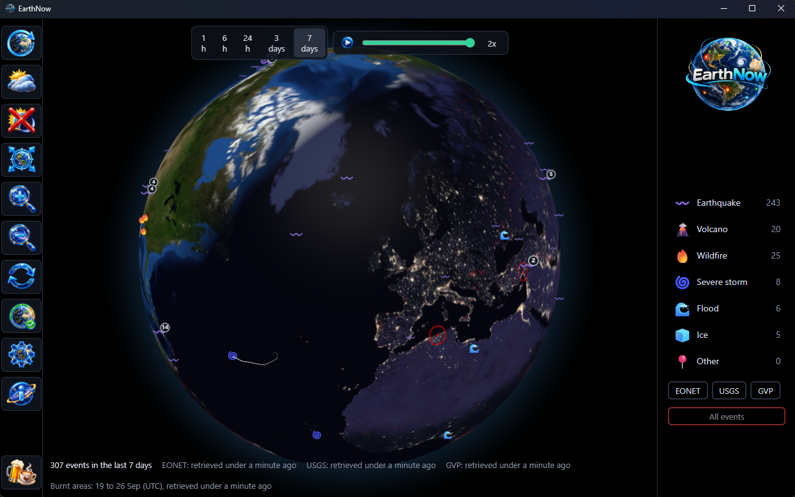
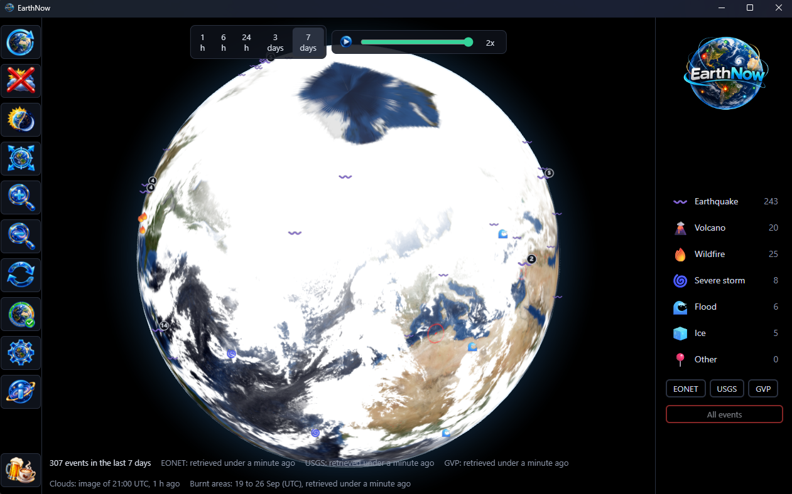

Features
What it puts on the globe.
Everything EarthNow puts on the globe and every way to move around it, a card each. Where the events come from is on the Why page.
A globe you can hold
NASA's Blue Marble on a black sky. It opens over your own country, then turns slowly by itself; grab it and it is yours to spin and zoom.
The clouds, when you want them
One press lays the world's clouds over the globe, as the weather satellites saw them a few hours ago. Watch a storm system wrap around the events beneath it.
Day and night, as it is now
The real sun lights the globe. Watch dusk sweep across a continent while the city lights come up on the night side, worked out on your own machine from the time.
Where the fires have burnt
Burnt ground glows red across the globe, mapped from satellites day by day. Pick a week and you see a week of it.
Replay the week
Press Play and the whole window runs past in thirty seconds: quakes popping up, storms tracking across the ocean, the sun sweeping round and the clouds on the move. Or drag the slider to any moment. Slow it to half speed to follow a storm, double it for a quick look, then press Now to come back to the present.
Every event where it happened
Each one wears its own emoji, so the map reads at a glance. Earthquakes grow with their magnitude and storms trail the path they took. Crowded spots gather into a count; click it and the globe zooms in until they separate. Too close to part? It lists them instead.
Names the place
Hover a marker for the nearest town, its country, how far away and in which direction. No more squinting at an ocean wondering where that is.
The detail, one click away
Open an event for its time, its position, its measurement, an earthquake's depth and a link to the source's own page, which opens in your browser.
The last hour or the last week
Pick 1 hour, 6 hours, 24 hours, 3 days or 7 days. Turn categories and sources on and off from the key, which counts what is showing.
Works from the keyboard
Every button and every event on the globe can be reached without a mouse.

